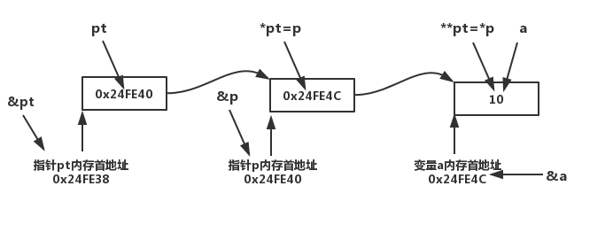

前言：
指针的初识点击移步
双重指针：
指向指针的指针是一种多级间接寻址的形式，或者说是一个指针链。通常，一个指针包含一个变量的地址。当我们定义一个指向指针的指针时，第一个指针包含了第二个指针的地址，第二个指针指向包含实际值的位置。
直接上脚本
#include <stdio.h>
int main ()
{
int a = 10;
int *p,**pt;
p = &a;
pt = &p;
printf("变量a的内存地址:0x%X\n",&a);
printf("变量a存储的值:%d\n",a);
printf("指针p的内存地址:0x%X\n",&p);
printf("指针p存储的地址:0x%X\n",p);
printf("指针pt的内存地址:0x%X\n",&pt);
printf("指针pt存储的地址:0x%X\n",pt);
} 执行输出
变量a的内存地址:0x24FE4C
变量a存储的值:10
指针p的内存地址:0x24FE40
指针p存储的地址:0x24FE4C
指针pt的内存地址:0x24FE38
指针pt存储的地址:0x24FE40由输出可见，双重指针pt存储的地址为指针p的内存地址 即pt = &p ; 单指针之前已经总结过，在此不再赘述；那么*pt，**pt又为何值与指针p的关系是什么？
#include <stdio.h>
int main ()
{
int a = 10;
int *p,**pt;
p = &a;
pt = &p;
printf("变量a的内存地址:0x%X\n",&a);
printf("变量a存储的值:%d\n",a);
printf("指针p的内存地址:0x%X\n",&p);
printf("指针p存储的地址:0x%X\n",p);
printf("指针pt的内存地址:0x%X\n",&pt);
printf("指针pt存储的地址:0x%X\n",pt);
printf("指针*pt是什么:0x%X\n",*pt);
printf("指针**pt是什么:%d\n",**pt);
}
//变量a的内存地址:0x24FE4C
//变量a存储的值:10
//指针p的内存地址:0x24FE40
//指针p存储的地址:0x24FE4C
//指针pt的内存地址:0x24FE38
//指针pt存储的地址:0x24FE40
//指针*pt是什么:0x24FE4C
//指针**pt是什么:10等价关系 *pt = p ,**pt = p ；
绘制关系图如下：
